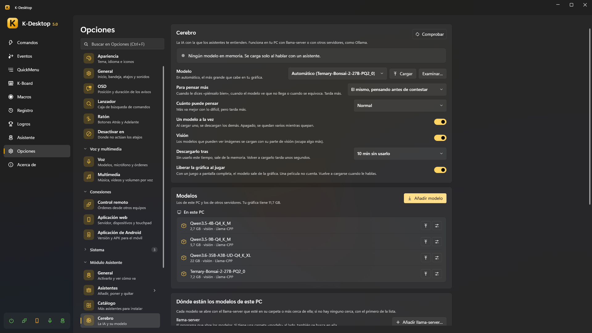

Cerebro (la IA)
Los asistentes te entienden con un modelo de IA. Va en tu PC con llama-server (de llama.cpp), o en otro servidor que
ya tengas, como Ollama, llama-swap o LM Studio. Opciones → Asistente → Cerebro.

Note
Sin ningún modelo los asistentes siguen funcionando: las frases fijas (la hora, los temporizadores, las notas, «recuerda que…»), tus comandos y las reglas de ventanas y programas no necesitan IA. Elige Sin IA (solo reglas y tus comandos) para dejarlo así.
Dónde se piensa la respuesta
La página te dice adónde va lo que dices:
| En este PC | Lo que le dices no sale del ordenador |
| En otro equipo de tu red | Lo que le dices no sale de casa |
| En internet | Lo que le dices sale de tu red |
Modelos de este PC
- Dónde están los modelos de este PC → llama-server → Añadir llama-server…: el
llama-server.exeque abre los modelos. Si tiene una carpetamodelsal lado, también se busca ahí. Con varios, cada modelo se abre con el de su carpeta o el más cercano; si no, con el normal (Hacerlo el normal). - Carpetas con modelos: se buscan los archivos
.ggufque haya dentro. Una de ellas es donde van los que descargas (Abrir, o moverla a otro sitio). - Añadir modelo: pega el enlace de un modelo de Hugging Face o escribe su nombre (
unsloth/Qwen3.5-9B-GGUF, ounsloth/Qwen3.5-9B-GGUF:Q4_K_Mpara una cuantización). Cada archivo dice si cabe en tu gráfica, va justo o no cabe (irá lento); el más grande que cabe ya viene elegido. Los modelos que ven imágenes ofrecen también su parte de visión.
La lista Modelos enseña los de este PC y los de los otros servidores, el que está en memoria en verde, con Cargar,
Liberar, Borrar y Opciones de llama-server solo para ese modelo (por ejemplo -c 32768 para más contexto).
Otros servidores
Otros servidores → Añadir: Ollama, o cualquier servidor compatible con OpenAI (llama-swap, LM Studio…), en este PC o en otro, con su dirección y, solo si la pide, una clave de API (se guarda cifrada para tu usuario). Probar dice cuántos modelos tiene. Sus modelos salen en la misma lista.
Elegir el modelo
| Ajuste | |
|---|---|
| Modelo | Automático: el más grande que cabe en tu gráfica. O uno concreto, o Sin IA |
| Para pensar más | El que usa cuando dices «piénsalo bien», cuando el modelo ve que no le basta o cuando le dices que se ha equivocado. El mismo modelo (razonando antes de contestar), otro modelo, o Nunca. Con otro modelo, Razonar antes de contestar decide si razona primero o contesta tal cual (tarda menos) |
Los dos tienen Examinar… (un .gguf de cualquier carpeta) y Cargar cuando el elegido no está en memoria |
|
| Cuánto razona al pensar más | Poco, normal, mucho (solo cuando razona). Más va mejor con lo difícil, pero tarda más |
| Descargarlo tras | Tanto tiempo sin usarlo, sale de la memoria (o Nunca: solo si se lo pides). Volver a cargarlo tarda unos segundos |
| Un modelo a la vez | Al cargar uno, se descargan los demás. Apagado, se quedan varios mientras quepan |
| Visión | Los modelos que ven imágenes se cargan con su parte de visión (ocupa un poco más) |
| Liberar la gráfica al jugar | Con un juego a pantalla completa, el modelo sale de la gráfica. Una película no cuenta. Se vuelve a cargar al hablarle |
Cada asistente puede pensar con su propio modelo (su ficha → Básico → Piensa con, y otro propio para pensar más: Global, El mismo modelo o uno de la lista, con su casilla para razonar o no, y cuánto razona). El paquete de un asistente puede sugerir un modelo: la ficha de instalación y su pestaña Básico ofrecen descargarlo (nunca marcado de entrada), solo si cabe y no lo tienes.
Liberar la gráfica
El modelo se carga solo al hablar con un asistente, ya mientras dices la orden. Para sacarlo de la memoria:
- Liberar, junto a él, arriba de la página;
- di o escribe «descarga el cerebro» / «descarga el modelo» (y «carga el cerebro» para tenerlo listo);
- la acción Asistente: cerebro en un comando o un evento (antes de un juego, un render…).
Pensar más
Los modelos pequeños contestan al momento, pero pueden fallar una cuenta o un acertijo. Pídele «piénsalo bien», «piénsalo mejor» o «piénsalo otra vez» (antes o después de la pregunta), o dile «está mal»: lo piensa más y lo comprueba. Un modelo grande también puede decidir solo pensarlo más. Tarda más: hasta medio minuto.
Probar modelo
Al final de la página, Probar modelo le da al modelo una lista de órdenes de prueba y te dice cuántas acierta y cuánto
tarda de media. No se ejecuta nada de verdad. Abrir el banco abre Assistant\bench.json, para escribir tus propias
órdenes.